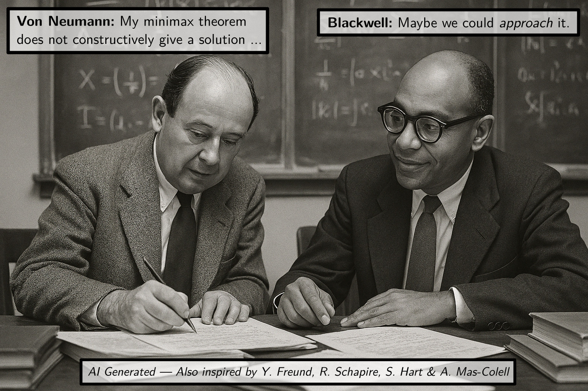

Workshop on regret, optimization & games
Paris, France — November 5–7, 2025

The workshop aims at presenting and discussing recent contributions at the intersection of regret minimization, optimization and learning in games, and is to cover both theoretical and practical aspects.
Confirmed speakers
- Jacob Abernethy
- Francis Bach
- Nicolò Cesa-Bianchi
- Evgenii Chzhen
- Ashok Cutkosky
- Aaron Defazio
- Jelena Diakonikolas
- Tim van Erven
- Gabriele Farina
- Sergiu Hart
- Elad Hazan
- Kohei Hatano
- Michael I. Jordan
- Emilie Kaufmann
- Tomer Koren
- Kfir Levy
- Roi Livni
- Yishay Mansour
- Francesco Orabona
- Sarah Sachs
- Flore Sentenac
Participants
- Juliette Achddou
- Achraf Azize
- Debabrota Basu
- Dorian Baudry
- Axel Benyamine
- Jérôme Bolte
- Étienne Boursier
- Aymeric Capitaine
- Solenne Gaucher
- Christophe Giraud
- Julien Grand-Clément
- Hector Kohler
- Cyril Kone
- Joon Kwon
- David Lurie
- Matias Ortiz
- Vianney Perchet
- Marius Potfer
- Naila Sebastián Esandi
- Matilde Tullii
- Victor Turmel
- Sumit Vashishtha
- Guillaume Vigeral
- Yannick Viossat
- Minrui Xu
Venue
Amphithéâtre Choquet-Bruhat
Institut Henri Poincaré
11 rue Pierre et Marie Curie
75005 Paris
Registration
Free but mandatory: registration form.
Schedule
For titles and abstracts, see the detailed program.
| Wednesday 5 | Thursday 6 | Friday 7 | |
|---|---|---|---|
| 8:30 | Welcome coffee | Welcome coffee | Welcome coffee |
| 9:00 | Diakonikolas | Sentenac | Koren |
| 9:45 | Cesa-Bianchi | Hazan | Kaufmann |
| 10:30 | Coffee break | Coffee break | Coffee break |
| 11:00 | Mansour | Abernethy | Van Erven |
| 11:45 | Lunch break | Lunch break | Lunch break |
| 13:30 | Hart | Orabona | Jordan |
| 14:15 | Farina | Levy | Sachs |
| 15:00 | Coffee break | Coffee break | Coffee break |
| 15:30 | Chzhen | Cutkosky | Livni |
| 16:15 | Hatano | Defazio | Bach |
| 17:00 | Discussion | Discussion | Discussion |
| 19:30 | Social dinner |
Organizing commitee
Julien Grand-Clément — Joon Kwon — Vianney Perchet — Bruno Ziliotto